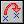
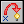
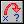

向固定方向移动
使用此动作使一实例向特定的方向移动。使用箭号按键来指出方向，使用中央按键来停止运动。可以设定物体运动的速度。速度单位为像素每步，默认值是8，最好不要使用负值。你可以设定多个方向，如果选中多个方向，物体会随机选中其中一个方向运动，例如你想让一怪物在游戏开始时随机往左或右方中的一个移动。
向任意方向移动
第二种方法是使用蓝色箭头来定义一个运动，这样你可以设定一个0到360度之间精确的方向，水平向右方向为0，度数逆时针增加，90度为一朝上的方向。假如你想要一任意的方向，你可键入任意方向random
(360)（意思为在0-360之间任取一随机数值）。你可能已经注意到有一个相对复选框，假如你勾选它，新的运动设定会加到旧的运动设定上。好比说，假如实例是朝上运动而你增加一点向左的运动，最后新运动将是朝左上方运动。
朝指定点移动
这是第三种让物体移动的动作，你指定一个位置和运动速度，实例按指定的速度向位置移动（注意物体不会停在指定的位置！只是朝位置方向移动）。例如，你想要子弹朝宇宙飞船的位置运动，你可以设定子弹朝向的位置为：spaceship.x，spaceship.y（后面章节有更多关于变量的使用方法）。假如你勾选“相对”复选框，即是在指定相对于当前实例位置的新位置（速度并不会“相对”）。
水平速度
一个实例的速度由一水平和一垂直速度组成。你可以用这个动作来更改水平的速度，速度是正值代表往右运动，是负值代表往左运动，垂直的速度将保持不变。使用“相对”来增加水平的速度（或用一负数减少它）。
竖直速度
同样的，仅更改实例的竖直速度。
设定重力
用此动作你可以创建物体的重力效果。你指定一方向（角度在0到360度之间）和一个重力加速度值，指定方向的重力速度值会添加在物体实例当前的运动中，通常你设定小的加速度（如0.01），设定方向为竖直向下（270度）。假如你勾选“相对”复选框你将增加重力的速度和方向。注意，与实际生活中不同，你可以设定不为朝下的重力方向。
水平反向
这动作可以使物体实例运动的水平速度反向。例如当物体碰到竖直的墙的时候用此动作。
竖直反向
这动作可以使物体实例运动的竖直速度反向。例如用于碰撞水平的墙。
设定摩擦力
摩擦力使实例在运动之时速度缓慢减下来。在每步中数值会与速度相减，直到速度变为0，通常摩擦力值设的比较小（如0.01）。

跳到一指定位置

跳到开始位置

跳到一随机位置
对齐到网格
使得你可以把一实例的位置定位到网格上。你可以指定水平和垂直两者的定格数值（就是网格的最小单位的尺寸），对制作智能定位游戏是很有帮助的，比如炸弹人系列。
设置房间贯通
用这个动作，你可以使物体在房间里贯通。例如从屏幕左边出去，会从屏幕右边出来。这个动作通常用于离开事件，需要注意的是实例在贯穿的时候必须要有速度，因为实例贯穿的方向基于运动的方向，您可以指定是仅水平方向贯通，仅垂直方向贯通还是双向贯通。
移动到接触位置
设定运动方向，直至碰到物体为止。如果物体当前的位置已经有碰撞，那将不会运动。
否则物体会移动直到碰撞发生。 你可以指定一个方向以及一个移动的最大距离。比如说一个物体正在下落你可以指定它在碰撞到另一个实例之前运动的最大距离。
还可以指定这种效应发生是只针对碰撞到固体物体还是全部物体。很典型的你可以把这个动作放在碰撞事件中用来让实例产生朝一个特定位置运动，当在中途中遇到其他物体就停下来的效果
。
反弹
当你在碰撞事件放入这个动作，实例会自然的从物体上反弹开。假如你设定“精度”参数为“不精确”，只有水平的和垂直的墙壁才会被正确处理。当你设定“精度”参数为“精确”时，倾斜（甚至弯曲的）墙壁也可得到令人满意的处理结果（但是速度稍慢）。你也可以指定是否是从固态物体，或是从所有物体上反弹。注意弹跳的路径有时不是完全正确的，但在大部分情况下效果是很好的。